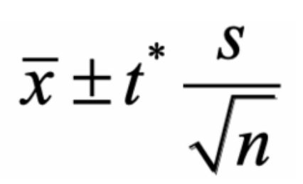

Is there evidence of skill growth in Mahjong Soul’s three-player ranked mode?
Mahjong Soul is an online Japanese mahjong platform where players play against each other in real-time across the world. I am focusing on the three-player variant of Riichi Mahjong (commonly known as Sanma), which is much faster-paced and features aggressive gameplay. To evaluate my performance over time, I collected data from 369 ranked games.
Each game’s rating change was recorded. This value is determined by net point change, placement-based Uma bonuses or penalties, and fixed gains or losses from one’s rank (e.g., Expert 1, 2, etc.). My goal is to answer the following:
I will use a 95% confidence interval for my true average rating change per game using a one-sample t-interval. If the entire interval is greater than 0, then I am improving; if less than 0, I am declining.
Checking Conditions:
1. Although this is observational, these games represent my usual play and cover my entire performance history at this rank—thus introducing some natural randomness.
2. With 369 samples, the Central Limit Theorem applies, so the sampling distribution is approximately Normal.
3. Each game is independent, so their rating changes are also independent.
Summary Statistics:
| Metric | Value |
|---|---|
| Mean Rating | 0.74 |
| Standard Deviation | 119.59 |
| Sample Size | 369 |
| Degrees of Freedom | 368 |
| t* | 1.967 |
Using the confidence interval formula:  and substituting the values, we get the interval below:
Since 0 is within this confidence interval, we cannot say that my true average rating gain per game is significantly different from 0. This suggests that I am not consistently gaining or losing skill at this level.
This is expected due to the game’s scoring system: first-place finishes provide substantial gain while last-place penalties are severe. With an expected equal chance of finishing in any place (1st, 2nd, or 3rd), rating changes will tend to balance out. The histogram below visualizes this distribution: